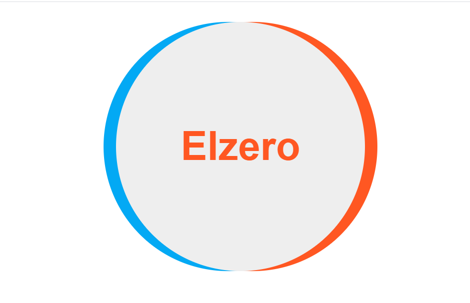
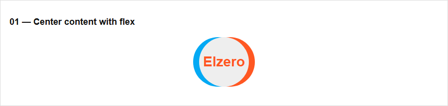

المطلوب في التكليف
استخدم بنية عنصر واحد كما هي. اجعل عرضه وارتفاعه 100px، ووسّطه أفقيًا، ثم وسّط كلمة Elzero داخله بالطول والعرض باستخدام Flex، مع الألوان المرجعية.
المصدر الرسمي: https://elzero.org/css-assignments-lesson-from-46-to-53/
المطلوب بجوار HTML المعاينة، ثم مقارنة النتيجة قبل قواعد CSS وبعدها. الشرح العربي من اليمين إلى اليسار، وكل HTML وCSS إنجليزي من اليسار إلى اليمين.
استخدم بنية عنصر واحد كما هي. اجعل عرضه وارتفاعه 100px، ووسّطه أفقيًا، ثم وسّط كلمة Elzero داخله بالطول والعرض باستخدام Flex، مع الألوان المرجعية.
المصدر الرسمي: https://elzero.org/css-assignments-lesson-from-46-to-53/
صفحة التكليف تعرض المعايير والصورة المرجعية، ولا تتضمن بنية HTML السابقة المشار إليها؛ لذلك يستخدم ملف المعاينة عناصر بديلة لإعادة بناء الشكل.
<section class="task t1-wrap"><h2>01 — Center content with flex</h2><div class="t1">Elzero</div></section>البنية المحلية نفسها قبل إضافة قواعد حل هذا التكليف.
البنية المحلية نفسها بعد تطبيق تنسيق المعاينة.


CSS الكامل لهذا التكليف، مستقل وباتجاه القراءة من اليسار إلى اليمين.
div {
width: 100px;
height: 100px;
margin: 0 auto;
display: flex;
justify-content: center;
align-items: center;
border-radius: 50%;
background: #eee;
color: #ff5722;
font-weight: bold;
box-shadow: -12px 0 #03a9f4, 12px 0 #ff5722;
}يحوّل display العنصر إلى Flex، ثم توسّط justify-content وalign-items النص على المحورين. يوسّط margin: 0 auto الدائرة داخل المساحة.
divيحدد العناصر التي ستأخذ قواعد التنسيق التالية.
width: 100pxheight: 100pxmargin: 0 autodisplay: flexjustify-content: centeralign-items: centerborder-radius: 50%box-shadow: -12px 0 #03a9f4, 12px 0 #ff5722background: #eeecolor: #ff5722font-weight: bold{}تجمع الأقواس قواعد المحدد وتحدد بداية القاعدة ونهايتها.
:تفصل النقطتان بين اسم الخاصية وقيمتها.
;تنهي الفاصلة المنقوطة تصريح CSS.
,تفصل الفاصلة بين القيم أو المحددات بحسب موضعها.
pxوحدات للمقاس أو النسبة أو الزمن؛ مثل px للبكسل وfr لجزء من المساحة المتاحة.
div {يحدد العناصر التي ستأخذ قواعد التنسيق التالية.
width: 100px;تحدد عرض العنصر.
height: 100px;تحدد ارتفاع العنصر.
margin: 0 auto;تحدد المسافة خارج الحد؛ وauto توسّط العنصر أفقيًا عند توفر عرض محدد.
display: flex;تحدد طريقة ترتيب العنصر وأبنائه، مثل Flex أو Grid.
justify-content: center;توزع العناصر على المحور الرئيسي.
align-items: center;تحدد محاذاة الأبناء على المحور العرضي.
border-radius: 50%;تدوّر زوايا العنصر بقيم يمكن أن تختلف بين الزوايا.
background: #eee;تحدد خلفية العنصر، ومنها اللون أو التدرج.
color: #ff5722;تحدد لون النص أو المحتوى.
font-weight: bold;تحدد سماكة الحروف.
box-shadow: -12px 0 #03a9f4, 12px 0 #ff5722;ترسم ظلًا حول العنصر أو داخله.
}يغلق كتلة قواعد CSS التي بدأها المحدد السابق.